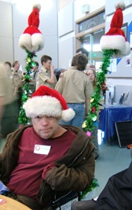

Donating to Bridge Disability Ministries
Each donor and their gift make a significant difference in the lives of people who have disabilities. If you have more questions about our ministry, or if you would like to discuss further your contribution to Bridge, please contact us at 425-885-1006, ext 118 or email. Thank you for your support of Bridge Ministries.
Make secure on-line donation now
Alternative Giving Ideas Give the gift of Mobility on behalf of your loved ones.
Suggested Amounts:
$25 Walker
$50 Walker with Wheels
$100 Manual Wheelchair
$200 Powered Scooter
$500 Powered Wheelchair
You may print a certificate to give to your recipent, and click here to make your donation.